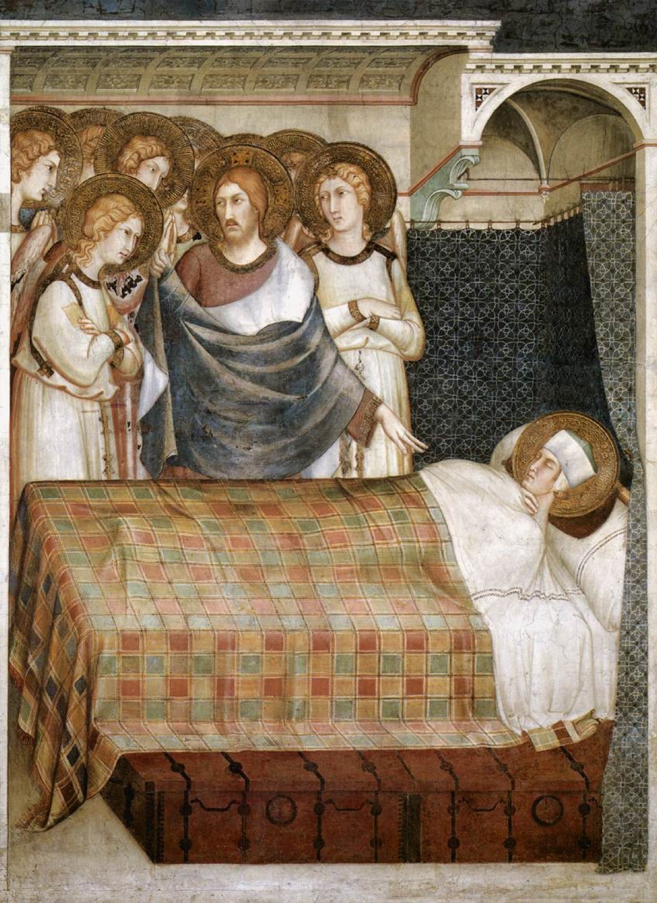
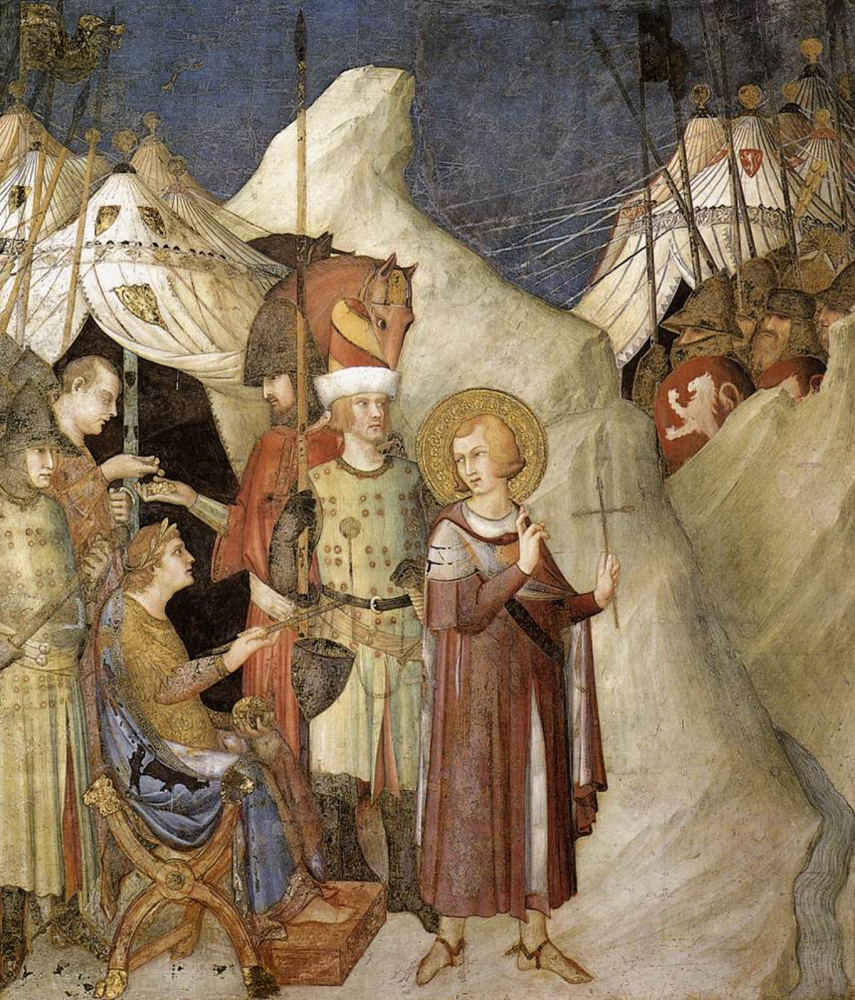

Alle porte di Amiens
È un inverno più rigido del solito, tanto che molti muoiono di freddo. Alla porta della città di Amiens Martino, soldato e non ancora battezzato, incontra un povero senza vestiti, che invano chiede aiuto ai passanti. Non ha denaro: ha già dato via tutto quello che aveva. Gli restano le armi e il mantello militare. Allora prende la spada, taglia il mantello a metà, ne dà una parte al povero e si riavvolge nell'altra.
Sulpicio Severo, che racconta la scena, annota anche le reazioni di chi guarda: alcuni ridono di quel soldato con l'abito mozzato; altri, più assennati, si rammaricano di non avere fatto altrettanto, loro che avevano di più e avrebbero potuto vestire il povero senza spogliarsi.

Il sogno
La notte seguente Martino vede in sogno Cristo, vestito della metà del mantello che ha donato, e lo sente dire agli angeli che lo circondano:
«Martino, che è ancora un catecumeno, mi ha coperto con questa veste.» Martinus adhuc catechumenus hac me veste contexit.
Sulpicio Severo, Vita di Martino, 3
Il biografo stesso indica la chiave del racconto, citando le parole di Gesù nel Vangelo di Matteo: «Tutto quello che avete fatto a uno solo di questi miei fratelli più piccoli, l'avete fatto a me» (Mt 25,40). Martino, aggiunge, non si inorgoglì della visione: riconobbe in essa la bontà di Dio e corse a farsi battezzare.


Perché soltanto metà
Si spiega spesso che il soldato romano pagava di tasca propria solo una parte dell'equipaggiamento, e che Martino diede dunque la metà che era sua. Sulpicio non dice nulla del genere: dice soltanto che Martino non aveva altro. Il senso del gesto, del resto, sta proprio lì. Martino non fa l'elemosina del superfluo: divide l'unica cosa che ha, e torna in caserma con mezzo mantello, esposto al freddo e alle risate.
La tradizione popolare ha aggiunto il lieto fine: al risveglio Martino avrebbe ritrovato il mantello intero, e il cielo d'inverno si sarebbe aperto in un sole tiepido, la prima estate di San Martino.
Dalla cappa alla cappella
Fra i tesori dei re franchi si conservava un mantello ritenuto quello di Martino: la cappa. I sovrani merovingi e poi i carolingi la portavano con sé in guerra e su di essa si prestavano i giuramenti. I chierici incaricati di custodirla furono chiamati cappellani, e il luogo dove era riposta, cappella. Le due parole sono passate in tutte le lingue d'Europa: ogni cappella del mondo deve il suo nome al mantello di Martino. La città di Aquisgrana, dove Carlo Magno costruì la sua, in francese si chiama ancora Aix-la-Chapelle.
Il mantello nell'arte
Il cavaliere che taglia il mantello è una delle immagini più ripetute dell'arte cristiana: Martino è quasi sempre a cavallo, benché Sulpicio non parli di cavalli, e il mantello è quasi sempre rosso.
Lucca, facciata della cattedrale (1200-1210 circa)
Il gruppo in pietra scolpito per la facciata del duomo, dedicato al santo, è fra le prime grandi sculture a tutto tondo del Medioevo italiano. L'originale è oggi al riparo all'interno della chiesa; in facciata se ne vede una copia.
Simone Martini ad Assisi (1312-1318 circa)
Nella Basilica inferiore di San Francesco la cappella di San Martino è interamente affrescata da Simone Martini con dieci storie del santo, dal dono del mantello ai funerali: una vita di cavaliere raccontata con l'eleganza di una corte gotica.
Firenze, Oratorio dei Buonomini (1478-1481 circa)
La bottega di Domenico Ghirlandaio dipinge il santo sopra l'altare della confraternita che da lui prende il nome e che da quasi sei secoli soccorre in silenzio i poveri della città (si veda I luoghi).
El Greco (1597-1599)
Per la cappella di San Giuseppe a Toledo El Greco trasforma Martino in un giovane gentiluomo spagnolo in armatura damascata, su un cavallo bianco; accanto a lui il povero, allungato come una fiamma. Il mantello qui è verde. Il dipinto è oggi a Washington.
Antoon van Dyck (1618-1620 circa)
Poco più che ventenne, Van Dyck dipinge la scena con il colore dei veneziani: la spada è colta nell'attimo in cui scende sul panno rosso, già afferrato dai mendicanti.